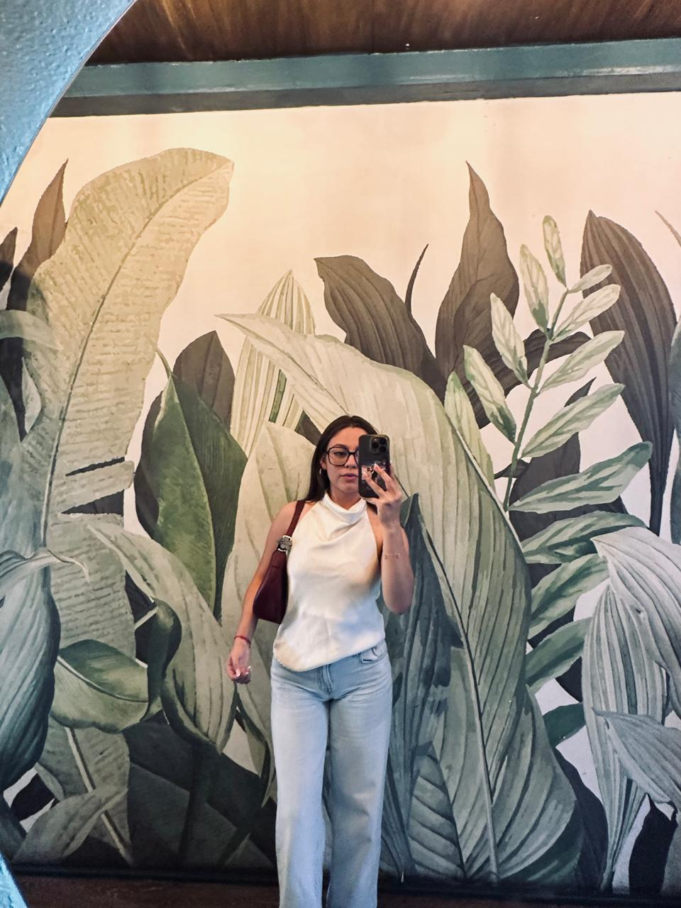

Soy estudiante de la Univerisdad de la Universidad Mariano Galvez, de la facultad de Ingeniería en Sistemas y me apasiona aprender sobre tecnología y desarrollo web. Durante este semestre he trabajado en distintos proyectos que me han permitido fortalecer mis conocimientos en programación, lógica de sistemas y resolución de problemas. Me considero una persona creativa, responsable y con muchas ganas de seguir creciendo profesionalmente.
Además de aprender temas técnicos, también he desarrollado habilidades como el trabajo en equipo, la comunicación y la organización. Cada proyecto realizado representa parte de mi proceso de aprendizaje y el esfuerzo que he puesto en esta nueva etapa universitaria. Me gusta enfrentar nuevos retos y descubrir formas innovadoras de crear soluciones utilizando la tecnología.